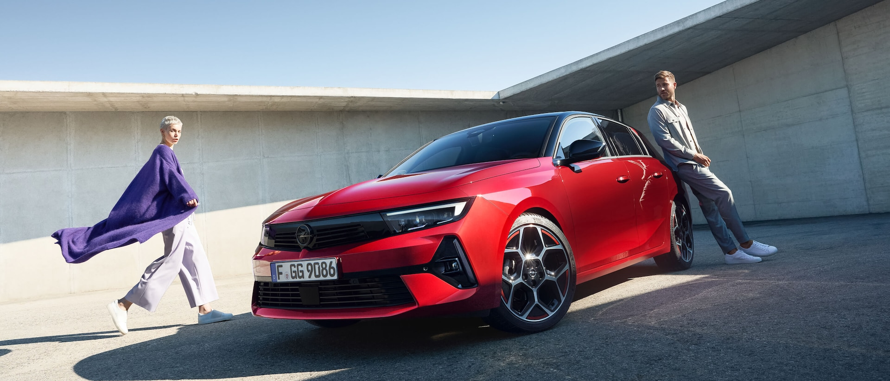

Nasza oferta
W naszym salonie znajdą Państwo szeroką gamę samochodów marki Opel:
- Opel Astra
- Opel Corsa
- Opel Insignia
- Opel Grandland X
Zapraszamy do zapoznania się z pełną ofertą dostępną na naszej stronie internetowej lub w salonie.
Opel Astra
Nowoczesny i sportowy samochód kompaktowy, który łączy w sobie elegancję z dynamiką. W naszej ofercie znajdą Państwo różne wersje silnikowe oraz wyposażenie dodatkowe.
Opel Corsa
Samochód miejski, który doskonale sprawdzi się w codziennych dojazdach do pracy czy szkoły. Dostępny w wersjach hatchback oraz sedan, z różnymi silnikami benzynowymi i dieslowymi.
Opel Insignia
Opel Insignia to wytwarzany od 2008 r. model segmentu D (klasa średnia). Jest jednocześnie flagowym modelem w naszej ofercie. Opel Insignia oferowany jest w wariantach sedan, liftback, kombi oraz uterenowionego kombi.
Opel Grandland X

Dynamiczny, rasowy SUV gotowy na każdą przygodę. Grandland X, również w wersji hybrydowej plug-in, to oryginalne połączenie najnowocześniejszej technologii i zachwycającego wzornictwa.